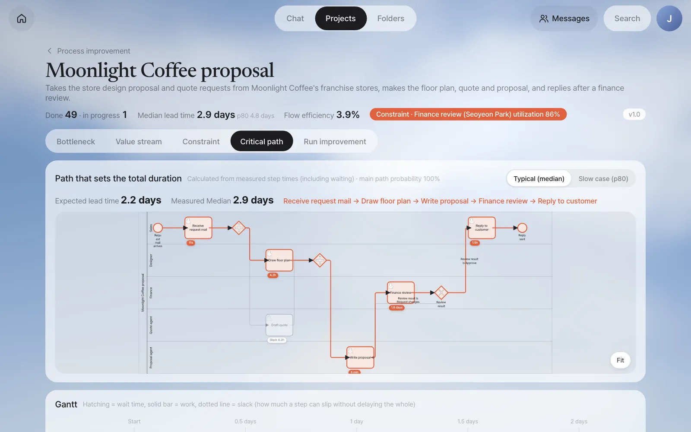
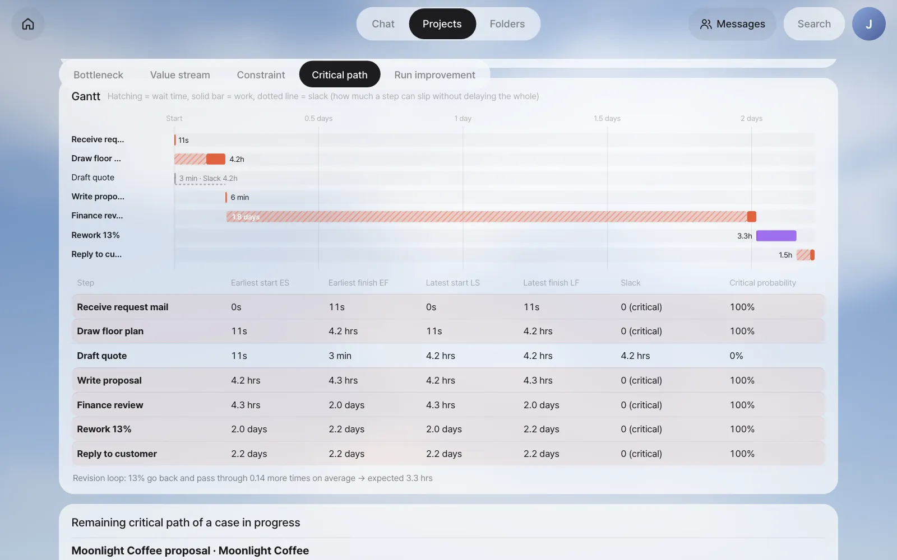
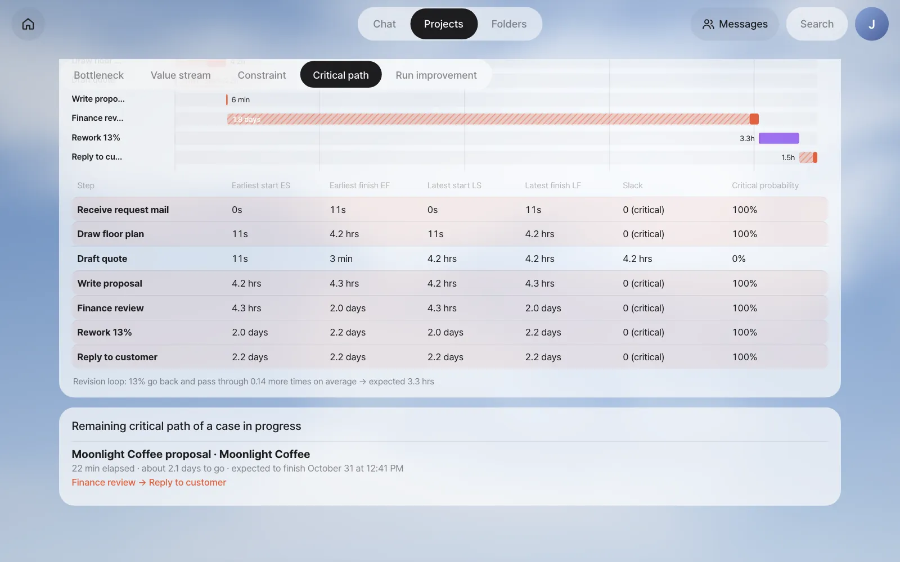
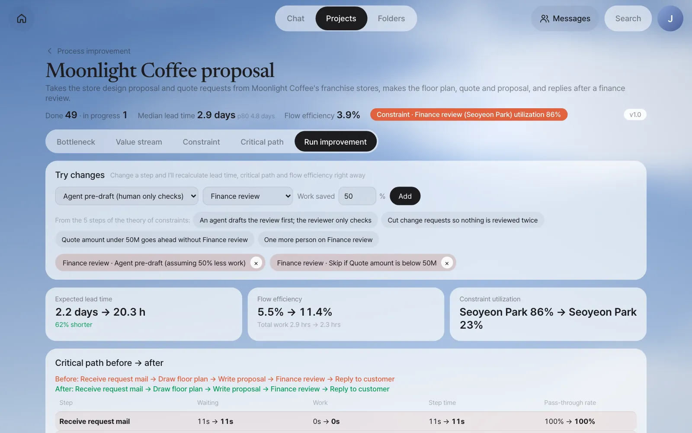
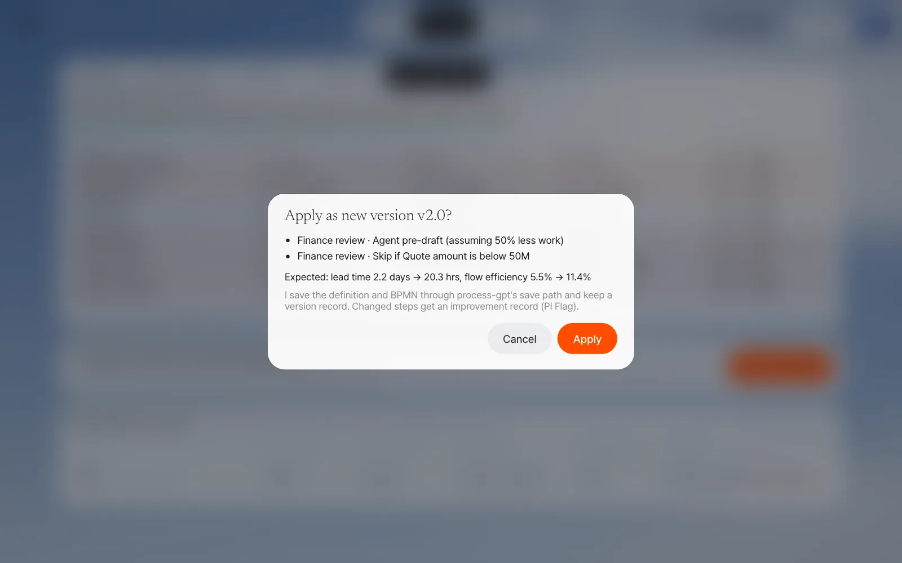
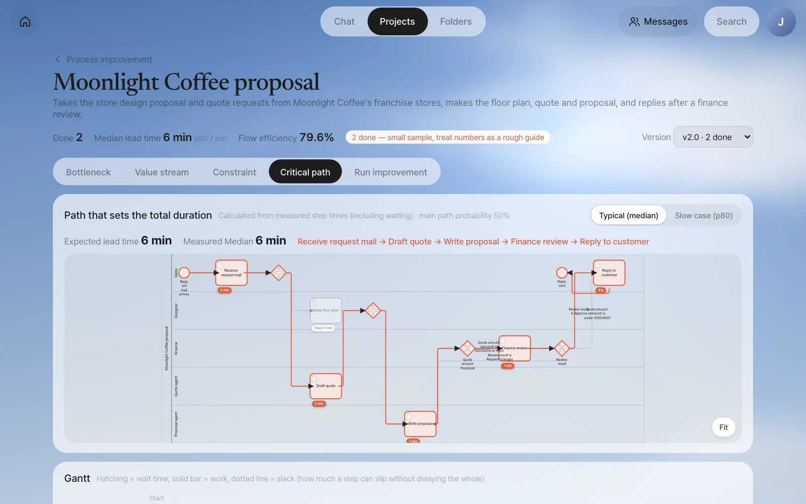
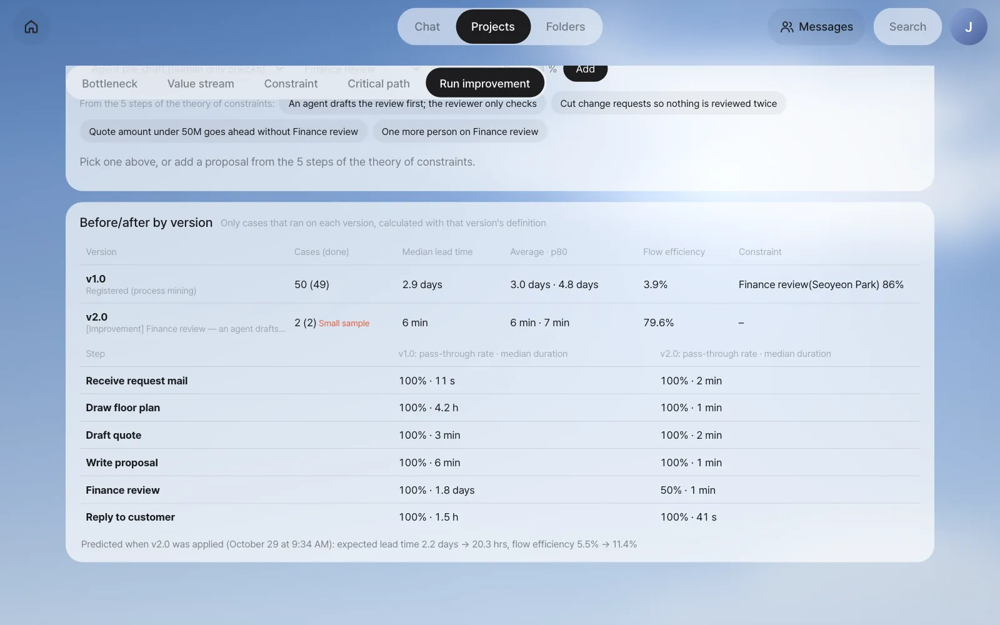

You'll use BPMN and a Gantt chart to see the chain of steps that sets the total duration (the critical path) and the slack — how late a step can be without delaying the whole. You'll estimate when a case in progress will finish. Then you'll calculate in advance how much changing a step would shorten the lead time, apply the option you like as a new version, and run it for real.
The critical path — the chain that sets the total duration#
In Chapter 21 you found the constraint (Finance review) and candidates for improvement. In this chapter you'll see which steps set the total duration, calculate the candidates in advance, and then actually apply one.
A process has steps that run at the same time. In the Moonlight Coffee proposal, once the request is received, Draw floor plan (Minji Kim) and Draft quote (quote agent) start together, and both must finish before it moves on to Write proposal.
┌─ Draw floor plan 4.2 hrs ─┐
Receive request mail ──┤ ├── Write proposal 6 min ── Finance review 1.8 days ── Reply to customer 1.5 hrs
└─ Draft quote 3 min ───┘
Even if Draft quote finishes in 3 minutes, Write proposal waits for the floor plan. The total duration is set by the chain that takes the longest. That chain is the critical path. If a step on the critical path is an hour late, the whole thing is an hour late; a step off the critical path can be a little late without affecting the whole.
The way to calculate this is the critical path method (CPM). It counts four times for each step.
| Time | Meaning | Example: Draft quote |
|---|---|---|
| ES earliest start | The earliest a step can start, once all the steps before it are done | 11s (right after the request is received) |
| EF earliest finish | ES + step time | 3 min |
| LS latest start | The latest a step can start without delaying the whole | 4.2 hrs |
| LF latest finish | The latest a step must finish without delaying the whole | 4.2 hrs (when the floor plan finishes) |
Slack (float) = LS − ES. Draft quote has 4.2 hours of slack, so it can start that much later without delaying the whole. The steps with zero slack form the critical path.
CPM for business processes differs in three ways#
Unlike CPM for a construction schedule, a business process has the following. Process GPT Lite calculates straight from the BPMN.
| BPMN symbol | How it's handled |
|---|---|
| Parallel branch (+ gateway) | All branches run at the same time. The join waits for the latest branch |
| Choice branch (X gateway) — splitting forward | The cases are split by the share that took each branch in past records, and each is calculated. Expected lead time = Σ share × length of that case. Each step gets a "critical probability" (the sum of the shares of cases in which it was critical) |
| Choice branch — going back (change request) | With p as the share that went back, it's treated as passing through p ÷ (1 − p) more times on average, and that much time is added as "rework" |
Step times are measured times: the actual time from reaching the step until it ends, waiting included. You can view them two ways, Typical (median) and Slow case (p80).
Try it 1 — View the critical path#
On the Improve screen, open the Critical path tab.

| On screen | Value |
|---|---|
| Expected lead time | 2.2 days (shown next to the measured median, 2.9 days) |
| Critical path | Receive request mail → Draw floor plan → Write proposal → Finance review → Reply to customer |
| Step with slack | Draft quote (slack 4.2 hrs) |
The two lead times don't have to match: the expected lead time adds up the usual (median) time of each step, while the measured median is the usual time of whole cases. Here the calculation comes out shorter.
The Gantt chart and table below show ES, EF, LS, LF and slack for each step. Hatching is time waited, and the solid bar is work time.

| Step | ES | EF | Slack | Critical probability |
|---|---|---|---|---|
| Draw floor plan | 11s | 4.2 hrs | 0 | 100% |
| Draft quote | 11s | 3 min | 4.2 hrs | 0% |
| Write proposal | 4.2 hrs | 4.3 hrs | 0 | 100% |
| Finance review | 4.3 hrs | 2.0 days | 0 | 100% |
| Rework 13% | 2.0 days | 2.2 days | 0 | 100% |
| Reply to customer | 2.2 days | 2.2 days | 0 | 100% |
Of the 2.2-day critical path, Finance review takes 1.8 days. That most of Finance review's step time is hatching tells the same story as Chapter 20 and Chapter 21, from a different angle.
Switch the top right to Slow case (p80) and it recalculates with each step's p80 time. The expected lead time becomes 4.9 days, and Draw floor plan grows to 20 hours. Even so, Draft quote still has slack.
When will a case in progress finish?#
For a case in progress, it recalculates using the actual time of the steps already done, the remaining time of the current step (usual time − time elapsed), and the measured times for the rest. It's shown at the bottom of the screen under Remaining critical path of a case in progress.

In the picture, Gwanghwamun Store #53 has actually reached Finance review, and Seoyeon Park has opened it. The floor plan, quote and proposal took only minutes, but the remaining 2.1 days is the time a case usually spends in Finance review, most of it waiting. The expected finish time is counted in the calendar time of past records (nights and weekends included).
Try it 2 — Run improvement: calculate before you change#
In the Run improvement tab, change a step and it immediately recalculates the lead time, critical path, flow efficiency and constraint utilization. The process itself doesn't change yet.
| Change | What changes in the calculation |
|---|---|
| Automate with an agent | That step's wait and work become the usual time of this process's agent steps. The work that came to the owner goes away |
| Agent pre-draft (human only checks) | The person's work time drops by the saving rate, and that person's capacity grows |
| Skip when below threshold | A branch appears before the step. The share under the threshold (from past records) skips that step |
| In parallel with previous step | Runs in parallel with the step right before it |
| Add assignees | One more person doing the same work |
| Reduce revision requests | The share going back drops, so fewer passes are repeated |
Waiting is calculated in the two kinds you saw in Chapter 21. Only waiting in line grows and shrinks with a queueing formula (the same shape as utilization ÷ (1 − utilization); with several people, a formula that takes the headcount into account). Waiting for the owner (the time spent waiting for the part of the day when this work is done) stays as it is. Changing the number of people or the amount of work doesn't change the setup of "waiting until the next morning."
Test 1 — What if you automate the floor plan?#
Set the type to Automate with an agent and the step to Draw floor plan, then click Add.
| Before | After | |
|---|---|---|
| Expected lead time | 2.2 days | 2.0 days |
| Draw floor plan step time | 4.2 hrs | 5 min |
| Flow efficiency | 5.5% | 2.8% |
| Critical path | … → Draw floor plan → … → Finance review → … | Same |
The floor plan is on the critical path, so the lead time drops by those few hours, but the wait in front of Finance review stays the same, so the effect is small. Flow efficiency actually goes down — an agent now does in 4 minutes what took a person 1.6 hours, so total work shrank, while the lead time stayed almost the same. Flow efficiency measures "how much less waiting," so it doesn't improve with changes that don't cut waiting. This confirms the answer to question 3 in Chapter 21 with numbers. Remove it with the × on its chip.
Test 2 — Aim at the constraint#
Under From the 5 steps of the theory of constraints:, click An agent drafts the review first; the reviewer only checks and Quote amount under 50M goes ahead without Finance review. Both options are added together.
The amount threshold (50M) is calculated from past records, so depending on your practice data it may come out differently, such as 40M.

| Before | After | |
|---|---|---|
| Expected lead time | 2.2 days | 20.3 hrs |
| Flow efficiency | 5.5% | 11.4% |
| Constraint utilization | Seoyeon Park 86% | Seoyeon Park 23% |
| Finance review step time | 1.8 days | 1.1 days |
| Share going through Finance review | 100% | 53% |
You can also see why Finance review still takes 1.1 days. Seoyeon Park's waiting in line has almost disappeared, but the waiting for the owner, because she reviews only in the morning, is still there. That's where the next improvement candidate (reviewing twice a day) comes from.
Why flow efficiency is 5.5%, not 3.9%
The 3.9% on the value stream map is the actual average of past cases, while this 5.5% comes from the critical path calculation (based on medians). To compare before and after with the same calculation, "before" uses the calculated value too.
Apply proposal — make a new version#
Click Apply proposal and a confirmation dialog opens. Look at what will change and the expected effect, then click Apply. Only the process owner and admins can do this.

Applying does the following:
| What | How |
|---|---|
| Process definition | A Quote amount threshold branch appears before Finance review (under 50M → on to Reply to customer), and Finance review becomes a step where an agent fills in a draft first. The definition and BPMN are saved through the same save path as when you saved the process you made by chatting in Chapter 17 |
| Version | A new version v2.0 is recorded (what changed, linked to the previous version), and cases started from then on run on the new version |
| Improvement record | The changed steps get an improvement record (PI Flag), so you can gather the improved steps in the Process GPT screens too |
Cases in progress finish on the version they started with
Cases started before you apply keep running on the definition of the version they started with (v1.0) until they finish; the new version is used only for cases started after you apply. So changing a threshold doesn't change the approval path of a case that's already running. The Improve screen and the version comparison below also group each case by the version it started with.
Pick v2.0 in the version selector at the top of the screen to see the new version's BPMN and results calculated only from cases started on that version.

In our run, Gwanghwamun Store #53, which was already waiting at Finance review when v2.0 was applied, stayed on v1.0: it is still counted under v1.0 as the one case in progress, and its Finance review didn't become an agent pre-draft.
After the change — compare versions#
In our run, we actually ran two new requests after applying it.
| Case | Quote amount (quote agent) | What happened |
|---|---|---|
| Ikseon-dong Store #55 (25 ㎡) | ₩44,825,000 | Under 50M → at the branch it skipped Finance review and went straight to Reply to customer |
| Yeonnam Store #56 (80 ㎡) | ₩106,480,000 | When it reached Finance review, an agent filled in a draft first (decision Request changes: "the line items total KRW 96,800,000 … a KRW 9,680,000 discrepancy with no line item explaining it", and the quote is about 2.4 times the customer's KRW 40,000,000 budget). Seoyeon Park opened and checked it, then submitted it as approved (the practice script approves every review) |
Yeonnam Store #56's Finance review was recorded as 38 seconds of agent draft and 41 seconds of Seoyeon Park's work (just like the breakdown in Chapter 20). The version comparison at the bottom of the Run improvement tab shows the two versions side by side.

| v1.0 | v2.0 | |
|---|---|---|
| Cases (done) | 50 (49) | 2 (2) — small sample |
| Median lead time | 2.9 days | 6 min |
| Flow efficiency | 3.9% | 79.6% |
| Finance review: share going through · median duration | 100% · 1.8 days | 50% · 1 min |
The bottom line keeps the prediction made when you applied it (expected lead time 2.2 days → 20.3 hrs, flow efficiency 5.5% → 11.4%), so once cases pile up you can hold the prediction up against what really happened.
When the sample is small
In our run, the two v2.0 cases were handled right away, even their people steps, and finished in minutes. If you compare them on the same scale as v1.0's lead time (days) built up over three months, the effect is wildly inflated — like the 6 minutes and 79.6% in the table above. When fewer than 10 cases are done, the screen adds Small sample. What you can trust right now is the fact that the path changed (small cases skip Finance review). Judge the lead time effect after a few weeks have piled up, by comparing this table with the prediction made when you applied it again. After that comes repeat from the five steps in Chapter 21 — finding again where the constraint has moved to.
Next#
That's the end of Part 6, "Improving processes." Team lead Jinyoung Jang turned ad hoc work into a formal process and fixed it, using nothing but chat, the editor and the Improve screen. In Part 7 you'll widen your view to growing and running this system. The first chapter is the agent Workroom, which opens the working folder where agents work (Chapter 23).
Check your understanding
- Draft quote has 4.2 hours of slack. If the quote agent breaks down and Draft quote finishes 3 hours late, what happens to the total lead time? What if it's 6 hours late?
- In Finance review, 14% go back with a change request. How many more passes is that on average? What if the share going back were 50%?
- In the what-if, add One more person on Finance review. Explain, using "the two kinds of waiting," why the lead time hardly drops below 20.3 hours (in our run it went to 20.1 hours).
Answer
- Three hours late is within the slack (4.2 hours), so the whole stays the same. Six hours late goes 1.8 hours past the slack, so the whole is about 1.8 hours late, and Draft quote then becomes the critical path.
- p ÷ (1 − p) = 0.14 ÷ 0.86 ≈ 0.17 more passes (about one case in six goes through once more). At 50%, it's 0.5 ÷ 0.5 = 1 — on average, every case goes through once more.
- Adding a person cuts the waiting in line (waiting for earlier cases to finish), but the waiting for the owner, which comes from reviewing only during a set part of the day, stays. To cut the remaining wait, you have to change the review time slots themselves.